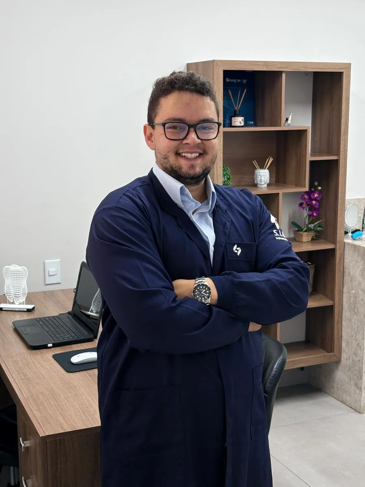

Implantes dentários em Araxá-MG
Perder um dente pode afetar o sorriso, a mastigação e a segurança no dia a dia. O primeiro passo não é decidir pela cirurgia: é entender o seu caso.
Avaliação, planejamento e acompanhamento explicados de forma simples.

Você não precisa entender de implantes antes da consulta
Na avaliação, examinamos sua saúde bucal e a região onde o dente foi perdido. Exames radiográficos e, quando necessários, tomográficos ajudam a avaliar o osso disponível e estruturas importantes para o planejamento.
Com essas informações, explicamos as possibilidades de tratamento e cada etapa antes de você tomar uma decisão.
O tratamento com implante em duas etapas
1. A base para o novo dente
O implante dentário funciona como uma base para o novo dente. Ele é instalado no osso e, após o período de cicatrização e integração, poderá sustentar a futura prótese dentária.
Depois da instalação, aguardamos a osseointegração. O período de osseointegração varia conforme a região, as condições ósseas, o tipo de procedimento e a resposta individual de cada paciente. O momento adequado para iniciar a fase protética é definido após avaliação clínica.
Quando indicado, uma solução provisória pode ser planejada durante esse período.
2. Chegou a hora do dente
Após a cicatrização e a avaliação do implante, começa a fase protética. Habitualmente, ela envolve sessões para acesso e registros/moldagem, prova e, estando tudo adequado, instalação da prótese.
O dente é confeccionado individualmente em conjunto com laboratório de prótese dentária, buscando integrar função, forma e estética ao restante do sorriso.
“Ainda posso colocar implante?”
Não ter osso suficiente para a instalação imediata não significa automaticamente que o tratamento não possa ser realizado.
Dependendo dos exames e das condições encontradas, podem ser avaliados enxertos ósseos e, em situações específicas da maxila, levantamento do seio maxilar. A necessidade de qualquer procedimento adicional é definida individualmente e explicada antes do tratamento.
E se eu estiver inseguro com a cirurgia?
É comum ter dúvidas ou alguma insegurança antes da cirurgia. A instalação do implante é realizada com anestesia local, e os cuidados pré e pós-operatórios são definidos de acordo com cada paciente e procedimento.
Quando indicada, a laserterapia pode ser utilizada como recurso complementar. Havendo sutura, o retorno costuma ocorrer em aproximadamente 10 dias. Durante a recuperação, você terá o contato do Dr. Henrique para esclarecer dúvidas e receber orientações.
Implante também precisa de manutenção
A higiene faz parte da rotina diária e, nos casos indicados, inclui fio dental e outros recursos específicos.
Normalmente orientamos limpeza e acompanhamento profissional a cada seis meses, com frequência ajustada às necessidades de cada paciente.
Por que voltar mesmo sem dor?
O implante não possui o mesmo mecanismo de percepção das forças mastigatórias de um dente natural. Por isso, não devemos esperar necessariamente aparecer dor para avaliar a reabilitação.
Manutenção também faz parte do tratamento.
Respostas simples para dúvidas comuns
Implante dói?
A cirurgia é realizada com anestesia local. O pós-operatório varia entre pacientes e procedimentos, por isso são definidos cuidados individualizados para controlar dor e desconfortos e acompanhar a recuperação.
Vou ficar sem dente durante o tratamento?
Quando o caso permite, pode ser planejada uma solução provisória durante a cicatrização. A possibilidade e o tipo de provisório dependem das condições clínicas.
Tenho pouco osso. Posso colocar implante?
É necessário avaliar os exames. Em alguns casos podem ser considerados enxertos ou outras técnicas de reconstrução antes ou junto ao planejamento do implante.
Quanto tempo demora?
Não existe um prazo único. O tempo depende da região, cicatrização, necessidade de procedimentos adicionais e da fase protética.
Perdi o dente há muitos anos. Ainda posso fazer?
O tempo desde a perda, sozinho, não determina a indicação. A região precisa ser avaliada clinicamente e por exames de imagem.
Implante precisa de manutenção?
Sim. Higiene diária e acompanhamento periódico ajudam a avaliar a prótese, os tecidos ao redor do implante e as condições da reabilitação.

Entenda primeiro. Decida depois.
Cada paciente apresenta condições e necessidades diferentes. A avaliação é o momento de entender seu caso, analisar os exames e esclarecer suas dúvidas antes de decidir pelo tratamento.
O objetivo é que você entenda o que será feito, por que será feito e como será o acompanhamento.
Dr. Henrique Fernandes Moreira
Cirurgião-Dentista • CRO-MG 67016
Henrique Fernandes Odontologia • Araxá-MG
As informações desta página têm caráter educativo. Diagnóstico, indicação, duração e resposta ao tratamento dependem de avaliação odontológica individual.
O primeiro passo é entender o seu caso
Agende uma avaliação para conversar sobre suas dúvidas e conhecer as possibilidades após avaliação individual.